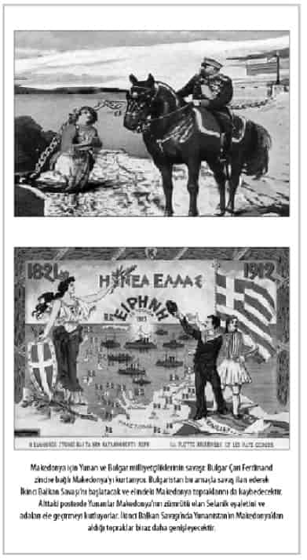

7

Yıl 1913...
Edirne’nin düşmesi Balkan Savaşı’ndaki en ağır darbedir. Edirne’nin ardından Yanya ve İşkodra da düşmüş, Rumeli’de her şey kaybedilmişti.
Edirne onu kurtarmak için darbe yapan İttihatçılar döneminde, Mahmut Şevket Paşa hükümeti zamanında kaybedildi... Devirdikleri Sadrazam Kâmil Paşa ve Hariciye Nazırı Gabriel Noradungyan Efendi, Londra Konferansı’nda direnmekte olan Edirne’nin Müslüman bir vali yönetiminde bağımsız ve tarafsız bir devlet olmasını önermişti. Bu mümkün olur muydu, bilinmez. Ama Kâmil Paşa’nın son teklifi buydu. O zaman İttihatçılar Edirne’yi teslim ediyorlar diye darbe yapmışlardı. Fakat aradan geçen dört ayda daha çok şehit verilmiş, mağlubiyet derinleştiği gibi işte Bulgarlar Edirne’ye girmişti. Yanya ve İşkodra kaleleri de düşmüştü! Şimdi Osmanlı’nın müzakere gücü büsbütün azalmıştı.
Şükrü Hanioğlu: Savaş sırasında Osmanlı Devleti Almanlardan yardım istediği zaman Alman dışişleri bakanı diyor ki; “Bir ufak zafer kazanın da bir yerde biz de devreye girip size yardımcı olmaya çalışalım. “Bir Plevne yaratabilir misiniz?” diyor Kâmil Paşa’ya. Ufak bir Plevne yaratın! Yani Plevne gibi bir şey yapamazsanız da bir yerde bir şey yapın! Ama ordu Çatalca’ya kadar arkasına bakmadan gerileyince, diplomatik alanda da yapacak bir şey kalmıyor.
İttihatçıların denetimi altındaki Mahmut Şevket Paşa hükümeti şimdi daha kötü bir antlaşma yaparak Edirne’nin Bulgaristan’a ait olmasına imza koyacaktır!
Mahmut Şevket Paşa sadrazam
İttihatçıların Babıâli Baskını’yla iktidara gelen Mahmut Şevket Paşa hükümeti, Büyük Devletler’in barış için araya girmesini istedi. Londra Büyükelçisi Tevfik Paşa, bunu 31 Mart 1913’te İngiliz Dışişleri Bakanı Sir Edward Grey’e bildirdi. İstanbul’daki büyükelçiler, Dışişleri Bakanı Sait Halim Paşa’ya ateşkes şartlarını ilettiler. 14 Nisan’da ateşkes yapıldı. Barış görüşmeleri de Londra’ya yapılıyordu.
Bu sırada Bulgaristan, karşı sayfadaki haritada görüldüğü gibi, tarihinin en geniş toprağına ulaşmış bulunuyordu: Edirne’yi almış, Çatalca’ya kadar bütün Trakya’yı işgal etmişti. Makedonya’nın doğusu ve bütün Batı Trakya Bulgar işgali altındaydı. Marmara ve Ege devleti olmuştu aynı zamanda.
Fakat Yunanistan Batı Trakya’yı, Sırbistan Makedonya’yı almak istiyordu. Bulgaristan’ı kenara iteceklerdi. Bunun için gizlice anlaşmışlar, askeri hazırlığa başlamışlardı. Londra görüşmelerinde Türkiye ve Bulgaristan barışta acele ediyordu. Yunanistan ve Sırbistan ise görüşmeleri uzatmaya çalışıyorlardı çünkü Bulgar ordusu Çatalca önlerindeyken Yunan ve Sırp orduları savaş hazırlığı için zaman kazanıyordu.
Sonunda, Londra’daki görüşmeler Büyük Devletler’in Yunanistan ve Sırbistan’a baskı yapmasıyla, 31 Mayıs’ta sonuçlandı, St. James sarayında Türkiye ile Balkan devletleri arasında barış antlaşması imzalandı.
Tarihçi Yılmaz Öztuna’nın deyişiyle, “Türkiye’nin tarih boyunca imza koyduğu en feci antlaşmalardan biridir”1 bu antlaşma.
Edirne’yi kurtarmak için Babıâli Baskını’yla darbe yapan İttihatçılar şimdi “Kâmil Paşa hükümetinin bir hayli yumuşattığı barış şartlarından çok daha ağırını” kabul etmeye, Edirne’yi Bulgaristan’a vermeye mecbur kalmışlardı.2
Mahmut Şevket Paşa ile Hariciye Nazırı (Dışişleri Bakanı) Sait Halim Paşa’nın imza koyduğu 7 maddelik Londra Antlaşması’na göre, özetle:
● Türkiye’nin Trakya sınırı, Midye ve Enez kasabaları arasındaki düz çizgi olarak kabul edildi, Edirne Bulgaristan’a bırakıldı.
● Girit adasının Yunanistan’a ait olduğunu Osmanlı hükümeti onayladı.
● Ege adalarının geleceği Büyük Devletler’in kararına bırakıldı. Bunun anlamı bu adaların Yunanistan’a verilmesidir.
● Arnavutluk bağımsız bir devlet olarak tanındı.3
Tarihçi Hikmet Bayur’un yazdığı gibi, “Babıâli Baskını ile başlayan olayların sonucu ulus ve ülke için çok zararlı” olmuş, var olan felaketi derinleştirmişti. “Babıâli Baskını ile Londra Barışı arasındaki devir çok karanlık ve korku içinde geçmiş bir devirdir.”4
Dahası, böyle karanlık bir dönemde Sadrazam Mahmut Şevket Paşa bir suikastla öldürüldü.
Mahmut Şevket Paşa’ya suikast
Bu felaketler içinde Mahmut Şevket Paşa hükümeti ve İttihatçılar orduyu güçlendirmek için kolları sıvadılar. İdari reform yapmak, kapitülasyonları kaldırmak, en azından hafifletmek ve ekonomiyi geliştirmek amacıyla çalışmalar başlattılar.5
Mahmut Şevket Paşa, kusurları yanında meziyetleri olan bir askerdir, iyi eğitim almıştır. Osmanlı Devleti’nin yapısını yeniden düzenlemenin şart olduğuna inanan paşa, Londra’da imzalanan barış antlaşması sayesinde ülkenin yaralarını sarmak için gereken zamanı kazandığını düşünüyordu. Çalışkan bir insandı. Sadece perşembe akşamları Üsküdar’daki evine gider, cuma sabahı döner, diğer bütün akşamları Harbiye Nezareti’ndeki odasında geçirirdi.6
Fakat Babıâli Baskını ile iktidara gelen hükümeti devirmek için şimdi de muhalefet aynı tarzda bir darbe hazırlığı içindedir!
Londra Antlaşması’nın üzerinden daha iki hafta geçmeden, 12 Haziran’da Sadrazam Mahmut Şevket Paşa öldürüldü. Bugün İstanbul Üniversitesi’nin ünlü binası olan Harbiye Nezareti’nden çıkmış, otomobille Babıâli’ye gidiyordu. Divanyolu’na geldiğinde yol tamiratı ve ortaya çıkan bir cenaze yüzünden otomobili durduğunda ateş yağmuru altında kaldı, yüzünden ağır yaralandı. Suikastçı katillerden Topal Tevfik, otomobilin penceresinden içeriye tabancasını uzatarak, yaralı vaziyetteki Mahmut Şevket Paşa’nın üzerine dört kurşun sıktı.
Mahmut Şevket Paşa ve yaveri İbrahim Bey öldü.
Öbür yaver Eşref Bey ve paşanın uşağı Kâzım Ağa otomobilden fırlayıp suikastçılarla silahlı çatışmaya girdiler, suikastçılar kaçtı. Fakat kısa sürede yakalandılar.
İstanbul Harbiye’deki Askeri Müze’de, Mahmut Şevket Paşa’nın vurulduğu araba ve katillerin kullandığı tabancalar teşhir edilmektedir. Arabadaki kurşun izleri nasıl planlı bir cinayete kurban gittiğini gösterir.
İttihatçıların İstanbul Muhafızı (Emniyet Müdürü) ünlü Cemal Paşa, suikast teşebbüsü olabileceği konusunda Mahmut Şevket Paşa’yı uyarmış, paşa “Allah’ın hükmü neyse o” diyerek kendini korumak için ciddi bir tedbir almamıştı. İttihatçılar da paşayı korumak için ciddi tedbirler almadılar. O zaman İstanbul’da iktidarda olanlar da muhalifler de bir taraftan düşman istilası, öbür taraftan suikast ve ayaklanma korkuları içindedir. Mahmut Şevket Paşa’nın öldürülmesine İttihatçılar pek de üzülmediler. Bu suikastı, yönetime tamamen el koymak için fırsat saydılar.
Suikastı düzenleyenler, başta Dahiliye Nazırı (İçişleri Bakanı) Talat Paşa olmak üzere önde gelen İttihatçıları da öldürmeyi planlamışlardı. Fakat İttihatçılar Mahmut Şevket Paşa’nın öldürüleceği istihbaratını almışlardı, hazırlıklıydılar. Hemen duruma el koydular, muhaliflerden 350 kişiyi tutukladılar, Sinop’a sürdüler, devamlı sıkıyönetim, sansür ve polis takibi ile yasal muhalefete bile göz açtırmadılar.7
Enver, 10 Haziran’da Alman bir kadın arkadaşına yazdığı mektupta, suikast konusunda herhangi bir üzüntü ifadesi kullanmadı, yollarına devam edeceklerini belirtti:
Ben gene umumi karargâhımızdaydım; suikast günlerinde İstan-
bul’da idim. Mahmut Şevket Paşa kaybedilmiştir; ama bu vatanseverleri anavatanlarının selameti için çalıştıkları yolda durduramaz.8
Suikastın arkasında geniş bir muhalefet yelpazesi vardır: İttihatçılara şiddetle karşı olan Halaskâr cuntasına mensup subay ve kumandanlar, Prens Sabahaddin grubu, Babıâli Baskını’nda Nazım Paşa’nın İttihatçılar tarafından öldürülmesinin yarattığı kin, Londra Antlaşması’yla Edirne’nin düşmana terk edilmesinin yarattığı tepki.9
Tarihçi Ziya Nur Aksun’un dediği gibi iktidar-muhalefet mücadelesi “iki çetenin savaşı”na dönmüştü!
Toprakları işgal edilmiş, savaş içindeki bir ülkenin yaşadığı siyasi kaos ve istikrarsızlığı görüyor musunuz?!
Divan-ı Harp denilen sıkıyönetim mahkemesinde, 15’i gıyaben, 22’si vicahen (yüzüne karşı) 37 kişi yargılandı. 10 kişi gıyaben, 12 kişi vicahen idama mahkûm edildi. Beyazıt Meydanı’nda kurulan sehpalarda hüküm infaz edildi. 8 kişi beraat etti. 7 kişi kalebent denilen ağır hapis cezasına çarptırıldı. Gıyaben idama mahkûm edilenler arasında Prens Sabahaddin, Kâmil Paşa hükümetinin İçişleri Bakanı Reşit Bey, Gümülcineli İsmail Bey ve Damat Salih Paşa gibi ünlü muhalifler vardır. Kararların hepsini adil saymak mümkün değildir.10
İdam edilenlerden Salih Paşa, Sultan Abdülmecid’in torunu Münire Sultan’la evli olduğu için “damat” unvanına sahiptir. Damat Salih Paşa gibi hanedana damat olmuş bir insanı, şüpheli delillerle idam ettirdiler. İttihatçılar, Yılmaz Öztuna’nın deyişiyle “bir damat astırarak hanedana gözdağı vermek istediler.” Artık İttihatçıları frenleyecek hiçbir güç yoktu. İttihatçı diktatörlüğü kurulmuştu. Mahmut Şevket Paşa’nın öldürülmesiyle İttihatçılar bekledikleri fırsatı yakalamışlar, “siyasi suçlar için darağaçlarının hiçbir zaman eksik olmadığı bir diktatörlük” kurmuşlardı. Muhalefet tamamen ezildiği gibi, İttihatçıları frenleyebilecek olan Mahmut Şevket Paşa’nın ölümüyle artık ülkede İttihatçılar tek güç haline gelmişti. Suikastın feci siyasi sonuçları hakkında tarihçi Öztuna’nın şöyle bir düşüncesi vardır:
Bu suikastla ülkede siyaset hayatının kapanması Türkiye için talihsiz oldu. Mahmut Şevket Paşa iktidarda kalabilseydi devlet hiyerarşisi bir kat daha bozulmazdı. İttihatçı-muhalefet ilişkisi o derece birbirinden kopmazdı. En mühimi imparatorluk çılgınca Birinci Dünya Savaşı’na atılmaz ve düşman sürülerinin Ankara önlerine kadar gelmesi ihtimali ortadan kalkardı...11
Yeni ve geçici Sadrazam Sait Halim Paşa’dır. Talat Paşa dahiliye nazırı, yani içişleri bakanıdır ve hükümetteki asıl “güçlü adam” odur. Dışişlerini Sait Halim Paşa kendi üzerine almıştır. Harbiye Nazırı Ahmet İzzet Paşa’dır. Ermeni Oskan Efendi, Posta Telgraf nazırıdır.
İkinci Balkan Savaşı
Londra Antlaşması’ndan 30 gün, Mahmut Şevket Paşa’nın öldürülmesinden 18 gün sonra Balkanlar’dan yine top sesleri gelmeye başladı: Makedonya’yı paylaşamayan Balkan devletleri arasında harp çıkmış, Bulgaristan, 29 Haziran 1913’te Yunanistan’la Sırbistan’a savaş ilan etmişti. Çatalca önlerindeki Bulgar ordusu hızla Makedonya’ya sevk ediliyordu.
Makedonya’yı almak için Sırp, Yunan ve Bulgar milliyetçiliklerinin kanlı çatışmaları daha 1890’lı yıllarda başlamıştı. Atina ve Sofya’da eğitilen silahlı komitacılar ve “siyasi ajan” olarak işlev gören öğretmenler dalgalar halinde Makedonya’ya gönderilmişti. Bunlar bir yandan Osmanlı yönetimini çökertmek ve Türkleri kaçırmak için terör eylemleri yaparken, birbirlerine karşı belki daha vahşi saldırılar düzenliyorlardı. Tarihçi Richard Clogg, Balkan Savaşı’ndan önceki on yıl içinde Makedonya’daki Bulgar ve Yunan komitaları arasındaki çatışmaların, Osmanlı ile olandan daha şiddetli geçtiğini belirtir.
Balkan milliyetçiliği üzerine geniş bir araştırması bulunan Anastasia Karakasidou, Osmanlı yönetiminin Makedonya’da zaafa uğramasına paralel olarak komitacı terörünün arttığını belirtir. Hem Müslümanlara hem Rum ve Bulgarların birbirlerine karşı komitaların yaptığı terör eylemlerinden, daha Balkan Savaşı’ndan önce Makedonya’nın “insan cesetleriyle dolu bir savaş alanı haline geldiğini” yazar.
Böylece Osmanlı yönetimi zaafa uğratılarak Müslümanlar Make-
donya’yı terke zorlanırken, Rum ve Bulgar toplumları arasına da derin bir nefret girmişti. Tarihçi Anastasia Karakasidou şöyle anlatır:
Makedonya üzerindeki Osmanlı merkezi yönetiminin azalması, üstelik ticaret, idare, vergi, eğitim ve din işleri konusunda milliyetçi çekişmelerin artması sert kapışmalara yol açacak olan bir ivme oluşturdu...
Makedonya’daki terörün asıl kurbanları daha çok Makedonya’nın kırsal kesimindeki “kanla sulanmış dağların ve ovaların” yerleşik halkı olan köylüler, papazlar, öğretmenler ve küçük tüccarlar oldu.
Bulgar ve Yunan komitalarının bu “kanlı Makedonya mücade-
lesi”12 1913’te savaşın eşiğine gelmişti. Dört Balkan devleti 1912’de Osmanlı’ya karşı ittifak yaparken de birbirlerine karşı gizli emeller besliyorlardı. Fakat öncelikle Osmanlı’yı Balkan-
lar’dan atma konusunda birleşmişlerdi. Osmanlı Balkanlar’dan atıldıktan sonra birbirlerine düşeceklerdi.
Şükrü Hanioğlu: Balkan devletleri, bir kere tekrar edeyim, savaş öncesinde birbirleriyle kanlı bıçaklı olan devletlerdi. İttifakın arka planında tamamen Osmanlı’yı bitirelim, ondan sonra biz kendi kozlarımızı paylaşırız fikri vardı. Hepsinin düşündüğü, hele şu Osmanlı gitsin bölgeden de arkasından ne olacağı belli olmaz, biz gene kendi politikalarımızı devam ettiririz şeklindeydi...
Toprak kavgası
Balkan milliyetçiliğinin bir özelliği “etnik” nitelikte olması ise, öbür özelliği “irredantist” yani geçmişte fi tarihinde “kaybetmiş” saydığı toprakları geri alma davası güden saldırgan bir milliyetçilik olmasıdır.
Balkan devletleri, özellikle Bulgaristan, Yunanistan ve Sırbistan arasındaki kavganın konusu, Osmanlı’nın elinden çıkan Makedonya’yı nasıl paylaşacaklarıdır. Başlangıçta Osmanlı’ya karşı ittifak yaparken, aralarında olacak toprak paylaşımının ayrıntılarını konuşmamışlardı; konuşsalardı ihtilaf çıkar, ittifak yapamazlardı. Bulgarlarla Sırpların Rus çarının hakemliğini kabul etmeleri, sorunu çözmeye yetmeyecekti. Zaten asıl çatışma Bulgaristan’la Yunanistan arasında olacaktı. Bulgarlar, Yunanistan’a Girit adası ile bazı Ege adalarını ve Makedonya’dan küçük bir parça toprak vermekle işi halledeceklerini düşünüyor, Makedonya’daki aslan payını kendilerinin alacağına inanıyorlardı. Yunanlar ise Girit ve diğer adaların zaten kendilerinin sayılacağını, asıl Makedonya’dan önemli bir pay koparacaklarını düşünüyorlardı. Her birinin milliyetçilik hedefleri uzlaşmaz surette çelişiyordu. Şimdi bunun için savaşacaklardı.
Richard Hall: Mart 1912’de Bulgarlarla Sırplar antlaşma yaptığında, Makedonya’nın parçalanma süreci de başlamış oldu. Savaştan önce bu antlaşmaya göre, Bulgaristan Güney Makedonya’yı alacaktı. Kuzey Makedonya tartışmalı bölge olarak Rusya’nın hakemliğine bırakılmıştı. Bulgaristan Mayıs 1912’de Yunanistan’la antlaşma imzaladığında, bu hiçbir toprak paylaşımını içermiyordu. Bulgaristan kendi ordusunun Yunan ordusundan çok daha iyi olduğunu, istediği her şeyi alabileceğini düşünüyordu. Ancak savaştaki gelişmeler böyle olmadı. Bulgar ordusu Selanik’e Yunan ordusundan bir gün sonra varabildi. Yunanlar daha öndeydi ve Makedonya’daki topraklarını genişletiyorlardı. Sırplar ise Kuzey Arnavutluk’u almanın peşindeydiler... Bu da Makedonya’daki Bulgar topraklarında gözü olan Sırbistan ve Yunanları, neticeten bu üç Balkan devleti ile karşı karşıya getirdi.
Bulgar ordusu Edirne ve Çatalca’da savaşırken, Yunanlar ve Sırplar Osmanlı İmparatorluğu’nu mağlup ederek işgal ettikleri Doğu Makedonya’daki Bulgar azınlığa karşı etnik temizliğe başlamışlardı. Aynı zamanda Bulgaristan’ı Makedonya’dan tamamen çıkarmak için askeri hazırlık yapıyorlardı. Atina ve Belgrad’a göre Bulgaristan Edirne ile Trakya’yı almıştı, bu yeterdi. Makedonya’yı kendileri paylaşmalıydı...
Sofya’ya göre ise, Balkan Savaşı’nın asıl yükünü Bulgaristan çekmişti, Makedonya’nın büyük kısmını Bulgaristan almalıydı.
Şükrü Hanioğlu: Bulgarlar Çatalca’da durdurulunca sonunda savaşın büyük yükünü çekmelerine karşın savaş sonrasında çok az bir mükâfat aldıklarını düşündüler ki burada bir haklılık payı da var. İkinci olarak tabii Bulgarlar Ayastefanos’ta kurulan büyük Bulgaristan’a nazaran şimdi ellerine geçeni az buluyor; yani işte Sırbistan kendisi kadar neredeyse toprak kazanıyor, Yunanistan aynı şekilde... Bunlar kendi nüfusları kadar nüfus ilave ediyorlar. Bulgaristan’ın kazancı son derece ufaktı bunlara nazaran, Bulgarlar haklı olarak kendileri için özellikle Makedonya’da yeni sınır belirlemek istediler...
Bu da kabul edilmeyince, istediklerini zorla alabileceklerini düşündüler. Bulgarlar en iyi Osmanlı ordularını mağlup ettikleri için ve gerçekten kara orduları da çok güçlü olduğu için, hem Sırbistan’a hem Yunanistan’a saldırarak böyle bir savaşı kazanacaklarını tahmin ediyorlardı...
Bulgaristan Birinci Balkan Savaşı denilen 1912 harbinde, Edir-
ne’yi ve Çatalca’ya kadar bütün Trakya’yı işgal ettiği gibi, bütün Batı Trakya’yı ve Selanik hududuna kadar Batı Makedonya’yı işgal etmişti. Londra Antlaşması’yla Osmanlı-Bulgar sınırı olarak Midye-Enez hattı kabul edilmiş, Balkan devletleri arasındaki sınırlar belirlenmemişti; savaş sırasında hangi Balkan ordusu nereyi işgal ettiyse ordular oralarda bekliyorlardı.
Şimdi savaş bitmişti, Balkan devletleri arasındaki sınırlar nereden geçecek, kim nereyi alacaktı?
Edirne’yi de ele geçirmesiyle Bulgar milliyetçiliği Trakya’da tatmin olmuştu fakat Selanik dahil Makedonya’nın tamamını Yunanistan’dan ve Sırbistan’dan almak istiyordu. Bulgar milliyetçilerinin çizdiği posterlerde, Makedonya zincire bağlanmış bir kadın olarak gösteriliyordu. Kurtarıcısı tabii Bulgar Çarı Ferdi-
nand’dı. Bulgar yönetiminin o zaman açıkça dile getirdi resmi görüşü şudur:
“Balkanlarda bir tek devlet için yer vardır, o Bulgaristan’dır!”13
Yunanistan ise Güney Makedonya’yı ele geçirmesini Megali İdea posterleriyle kutluyordu. Yunanistan, o sırada Bulgar işgali altında bunan Batı Trakya’yı da almak için hazırlık yapıyordu.
Çatışan milliyetçilikler
Balkan milliyetçiliklerinin tipik özelliği olan etnik kimlik ve irredantizm, yani toprak kazanma hırsı, Osmanlı’nın Balkanlar’dan atılmasıyla doymamıştı.
Amerika’daki Carnegie Vakfı, 1913 yılında savaş mezalimini araştırmak için Balkanlar’a uluslararası bir komisyon gönderdi.14 Carnegie Komisyonu’nun savaş sırasındaki verilere göre hazırladığı haritaya bakıldığında, Balkan uluslarının ele geçirmek istedikleri, yayılmacı (irredantist) milliyetçilik davası güttükleri anlaşılır. Buna göre, Yunanistan’ın almak istediği yerler Kıbrıs, tüm Ege adaları, Güney Makedonya ve Batı Trakya’dır. Sırbistan Bosna Hersek’le birlikte Kuzey Makedonya’yı almak peşindedir. Bulgaristan ise, bu ikisinin elinde bulundurduğu toprakları alarak tüm Makedonya’ya ve ilaveten Trakya’ya hâkim olmak istiyor.15
Böylesine çatışan milliyetçi politikaları, savaşın başında kararlaştırılmış olan Rusya’nın hakemliği de çözemedi tabii.
1 Haziran 1913’te Yunanistan ve Sırbistan, Bulgaristan’a karşı antlaşma imzaladılar. Makedonya’yı büyük ölçüde kaybetmekte olduğunu gören Bulgaristan, Londra Antlaşması’yla barış sağlanan Edirne ve Çatalca hattındaki ordularının büyük kısmını Makedonya cephesine sevk etti. Bulgar ordusunun Makedonya’da Vardar Nehri çevresinde mevzilenmiş Yunan ve Sırp kuvvetlerine 29 Haziran gecesi taarruz etmesiyle İkinci Balkan Savaşı başladı.
Bulgaristan taarruzda başarısız oldu. Bilhassa 4 Temmuz’da Bulgar ordusu Selanik’in kuzeyindeki Kılkız’da Yunanlar karşısında ağır bir mağlubiyete uğradı.
Sırp ordusuyla Bregalnitza Nehri boyunca giriştiği savaşta Bulgar ordusu başarısız oldu. 1 Temmuz’da Sırp ordusu Bulgarlara karşı genel bir taarruz başlattı.

Yunan ve Sırp ordularıyla savaşan Bulgaristan’a 5 Temmuz’da bir büyük darbe daha indi: Romanya, Bulgaristan’ın elinde bulunan Dobruca’yı almak için savaş ilan etti ve Rumen orduları Bulgar topraklarına girdi.
Dünkü Osmanlı gibi şimdi de Bulgaristan birkaç cephede birden savaşmak zorunda kalmıştı. Tüm cephelerde mağlup oldu.
Etnik temizlik
Balkan Savaşları’nın bir özelliği etnik temizliktir, şimdi de Balkan devletleri birbirlerine karşı aynı şeyi yapıyorlardı.
Richard Hall: Vahşet ve şiddet bölgedeki bütün insanlara karşı yapıldı. Bulgarlara, Sırplara, Yunanlara ve tabii Müslümanlara. Hepsi birbirlerine karşı korkunç hareketlerde bulundular. Bunun tek bir cevabı yok. Düşündüğümde tek bir neden söyleyemiyorum. Bir kere savaş ortamında kontrol yoktu. Milliyetçilik aşırılıkları doğurdu ve aşırıları ortaya çıkardı. Özellikle ilk Balkan Savaşı’nda Balkan orduları Osmanlı topraklarında ilerledikçe zalimane davrandılar. Sırplar Kosova’da ve Kuzey Arnavutluk’ta, Bulgarlar Trakya’da ve Yunanlar Güneybatı Makedonya’da ilerledikçe bu açıkça görüldü. İkinci Balkan Savaşı’nda mezalim daha azdır. Bunun tabii asıl sebebi, bu savaşın daha kısa sürmesiydi. İkinci Balkan Savaşı’ndan sonra Bulgarlar Trakya’da hatırı sayılır bir toprak büyüklüğüne sahip oldular. Tabii büyük de bir Müslüman nüfus vardı bu topraklarda. Bulgarlar bu defa istediklerini aldıkları için daha sakin davrandılar...
Makedonya için yapılan Yunan-Bulgar savaşına etnik temizlik eşlik etti. Bulgar ve Yunan milliyetçiliklerin birbirlerine düşmanlığı hiç de Müslüman Osmanlı’ya düşmanlıklarından az değildi. Osmanlı’nın sapasağlam bıraktığı Makedonya’da Yunanlar Bulgarlardan aldıkları yerlerde yıkım, katliam ve tehcir yaptılar. Bulgarlar aynı şeyi Yunanlara yaptılar.
Amerikan Carnegie Komisyonu’nun 1914 başında yayımlanan dört yüz sayfalık raporunda Türklere yapılan tehcir ve katliam anlatıldığı gibi, işgal ettikleri yerlerde Sırp ve Yunanların Bulgarlara, Bulgarların da Sırp ve Yunanlara yaptıkları tehcir ve katliam da anlatılır. Mezalimin, öldürülmüş, işkence görmüş insan fotoğraflarıyla, yakılıp yıkılan köy ve şehir fotoğraflarıyla belgelendirildiği raporda, tekil olaylar da anlatılır. Bu rapora Bulgarlar ve Yunanlar kendi milliyetçi iddiaları doğrultusunda karşı yayınlar yaptılar, bütün mezalimi “öteki”nin yaptığını iddia ettiler ama gerçek değişmedi tabii.
Raporda Yunanlar ve Bulgarlar tarafından ele geçirilen Selanik çevresinde, Kavala ve Drama gibi Makedonya topraklarında “200.000’den fazla Türk’ün yerlerinden, yurtlarından sürülüp çıkarıldığı” belirtilerek 1912 ve 1913 Balkan Savaşları’nda bundan daha ciddi bir mezalim olmadığı anlatılır. Hepsinin durumunun zavallı ve çocukların da kış yaklaşırken neredeyse çıplak oldukları, nereye sığınacaklarını bilmeden çaresiz kaldıkları anlatılır.16
Sırp, Yunan ve Karadağlı Bulgar kralını soyuyor.
1912’de Osmanlı’dan aldığı toprakların bir bölümünü,
1913’te Sırbistan, Yunanistan ve
Karadağ’a kaptırmasını anlatan karikatür.
1913 savaşında Yunanların ele geçirdiği Makedonya topraklarından 130.000 Makedonyalı sivil Bulgar’ın Bulgaristan’a sığınmak üzere kaçtığını, bunların çok acı çektiğini anlatan raporda okullara da değiniliyor. Yunan, Bulgar ve Sırp ordularının işgal ettikleri Osmanlı Makedonyası’nda kendi dilleri dışındaki bütün okulları kapattıklarını ve dilleri yasakladıklarını anlatan rapordaki şu paragraf son derece ilgi çekicidir:
Türk yönetimi altında ileri derecede eğitim ve din özgürlüğü bulunduğu hatırlandığında, geniş kitlelerin bugün tekrar Türk yönetimi arzuluyor olması tuhaf mıdır? En azından bazı bakımlardan Makedonya’nın kurtuluşu için yapılan bu savaş bu ülkenin insanlarına bir dizi yeni sıkıntı ve ıstırap getirdi.17
Müslümanlara zorla Hıristiyanlaştırma ve vaftiz töreni yapıldığını gösteren bu fotoğraf
Carnegie Raporu’nda yer alıyor.
Bulgarlar Yunanlara bırakmak üzere çekildikleri Demirhisar, Serez ve Kavala’da büyük tahribat yaptılar, Rum köylerini yaktılar. Yunan ordusu ise Bulgarlardan aldığı yerlerde Bulgar ahaliye karşı aynı şekilde etnik temizlik, katliam ve tehcir yaptı. Bulgarcayı yasaklayıp Helenleşmeyi zorunlu hale getirdi.18
Bunların hapsi Carnegie raporunda fotoğraf ve tanık ifadeleriyle yer aldı.
Carnegie raporuna göre, Balkan Savaşları sırasında Yunanlar, Bulgarlara bakışlarını Yunanca bir slogan olan “Onlar insan değil!” (Dihen einai antropoi!) sözüyle ifade ediyorlardı. Bu slogan Sırpların Arnavutlara, Bulgarların Türklere bakışını da ifade ediyordu. Carnegie raporunda Karadağlıların savaş hatırası olarak Türk askerlerinin burunlarını, dudaklarını kestiklerini tespit etmişti. Savaşan bütün taraflar esir aldıkları on binlerce askeri kasten ölüme terk etmişlerdi.19
Etnik temizlik ve homojenleştirmenin bir yolu da zorla din değiştirtmektir. Ortodoksların Bulgar Eksarhlığı’na yani kilisesine veya Rum Patrikhanesi’ne zorla bağlanmak, Bulgarlığın veya Yunanlığın tercihi anlamına geliyor, bunun için zorlama ve şiddet uygulanıyordu. Müslüman Türkler, Arnavutlar ve Pomaklar, hatta en çok Pomak Müslümanlar zorla vaftiz edilerek Yunan veya Bulgar kilisesine bağlanmaları için ağır baskılara maruz kaldılar.20
Balkan coğrafyasında hemen her savaş etnik ayrışma, kimlik değiştirmeye zorlama ve nüfus mübadelesi getirdi. Bunu göreceğiz, şimdi Edirne’ye dönelim.
Edirne’nin kurtuluşu
Osmanlı açısından Edirne ve Kırklareli dahil Trakya’yı kurtarmak için bir fırsat doğmuştu elbette. Ahmet İzzet Paşa kumandasında 200.000 kişilik Osmanlı ordusu 19 Temmuz’da Midye-Enez hattını geçerek Kırklareli ve Edirne’ye yürüdü. Edirne’de Tümgen. Vulko Velçev kumandasında 4.000 kişilik Bulgar kuvveti vardı, direnmeden mevzileri ve şehri boşalttılar. Türk ordusu 21 Temmuz 1913 Pazartesi günü halkın sevinç gözyaşları ve coşkulu gösterileri arasında Edirne’ye girdi. Üç ay 26 gün sonra Edirne’de tekrar Türk bayrağı dalgalanmaya başladı.
Edirne’nin kurtuluşu üzerinde biraz duralım.
Evet, Trakya’da önemli bir Bulgar kuvveti kalmamıştı. Fakat 30 Mayıs’ta Büyük Devletler’in inisiyatifiyle imzalanan Londra Antlaşması’nın daha mürekkebi kurumadan bu antlaşmayı ihlal etmek riskli bir karardı. Batılı devletler de Rusya da Türkiye’nin Edirne’yi almasına karşıdır.
Birinci Balkan Harbi sırasında 3. Kolordu Kumandanı olan Mahmut Muhtar Paşa şimdi Berlin’de Osmanlı büyükelçisidir. 13 Haziran’da Sadrazam Sait Halim Paşa’ya gönderdiği telgraf çok önemlidir. Mahmut Muhtar Paşa’nın telgrafında söylediği şudur:
Bulgarlar mağlup oluyor. Yunanlar Dedeağaç’ı aldılar, Edirne’ye yürüyebilirler. Bizim daha önce davranıp Edirne’ye yürümemiz iyi olur!
Babıâli, Osmanlı ordusunun Çatalca’dan Midye-Enez hattına yürüyeceğini, sınırın Meriç Nehri olması gerektiğini bildirdiğinde, Romanya ve İtalya dışında Batı başkentlerinden ve Rusya’dan sert diplomatik tepkiler geldi.
Ordu Edirne’ye yürürse, Bulgar ordusu dönüp bize saldırır mıydı? Rusya müdahale eder miydi? Büyük Devletler ne yapardı? İstanbul’da hükümet bu endişeler içindedir.
Edirne’nin kurtuluşu: Birinci Dünya Savaşı’ndan sonra Mondros Mütarekesi döneminde Edirne’yi
Yunanistan işgal etti. Fotoğrafta Milli Mücadele Zaferi’nden sonra 25 Kasım 1922’de Türk
ordusunun Edirne’ye girişi görülüyor.
Bu kaygılar yaşanırken İngiltere Dışişleri Bakanı Sir Edward Grey, bu defa Osmanlı’nın o sıradaki Londra Büyükelçisi Hakkı Paşa’ya aynen şunu söyledi:
Böyle bir çılgınlık yaparsanız İstanbul’u kaybedersiniz!21
Herkesin yüreğini ağzına getiren de bu korkuydu zaten! Ya İstanbul’u da kaybedersek!
Dahası, İngiltere Başbakanı Asquith, Türkiye Edirne’yi kurtarmak isterse o zaman “Asya Türkiyesi’nin bütünlüğünün” tehlikeye gireceğini söyleyerek Ermeni sorunu imasında bulundu! Rusya ise Boğazlar’a donanma göndermekle tehdit etti.22
28 Aralık 1912’deki Londra görüşmelerinde de İngiltere Dışişleri Müsteşarı Nicolson’un o zamanki büyükelçimiz Tevfik Paşa’ya benzer şeyler söylediğini görmüştük.
Bütün bu sebeplerle, kabinede çoğunluk çekingendir. Ordu tereddütlüdür. İki kişi, bütün tehlikeleri göze alarak Edirne’yi kurtarmak için hemen askeri harekâtın başlamasını savunuyor: Hükümette Dahiliye Vekili Talat Paşa, orduda Yarbay Enver Bey...
Talat Paşa kabine arkadaşlarını ikna etti. Celal Bayar’a göre, İttihat ve Terakki’nin parti olarak tavır koymasının bu iknada önemli rolü oldu tabii.23
Edirne’nin kurtuluşunu kutlamak için Posta Telgraf Nazırı (Bakan)
Oskan Mardikyan Efendi’nin çıkarttırdığı Edirne pulu.
Orduya gelince... Başkumandan Vekili ve Harbiye Nazırı Ahmet İzzet Paşa’nın iki sorusu vardır:
Harekâta geçersek çıkacak siyasi sorunlar memleketi tehlikeye atar mı?.. Ordunun iaşesini sağlayacak para bütçede var mı?!24
Bütçedeki para 100.000 liracıktır! Bu parayla hiçbir şey yapılamaz!
Durumu öğrenen Talat Paşa, yanına o zamanki Şûra-yı Devlet (Danıştay) Başkanı Halil Menteşe’yi de alarak Reji İdaresi Müdürü Mösyö Weyl’le görüştü. Nedir bu Reji İdaresi? Osmanlı Devleti’nin dış borçlarına karşılık olarak bazı vergileri toplama imtiyazı yabancılara verilmiş, bunun yönetimi için de 1881 yılında Düyun-ı Umumiye (Kamu Borçları) adıyla yabancıların yönetiminde bir müessese kurulmuştu. Tuz ve tütün vergilerini toplayan bölümüne Reji İdaresi deniliyordu.25
Uzun tartışmalardan sonra Talat ve Halil Beyler, Reji İdaresi Müdürü Weyl’e 150 bin lira rüşvet vermeyi taahhüt ettiler, o da reji imtiyazının 15 sene daha uzatılması karşılığında, Reji İdaresi’nin Osmanlı Devleti’ne 1.600.000 lira kredi vermesini kabul etti. İşlemler hemen yapıldı.26
Bakanlar Kurulu toplanıp harekât kararı aldı.
3 Ocak 1913’te Trablusgarp’tan dönen, 23 Ocak’ta Babıâli Baskını’nı yapan Enver Bey, Çatalca Cephe Kumandanı Hurşit Paşa’yı harekâta ikna etmiş, askeri hazırlıklar başlamıştı.27 Kabine harekât kararı vermeseydi, Enver, Hurşit Paşa’nın kolordusunu alıp Edirne’ye yürüyecekti.28
21 Temmuz’da Edirne’ye giren Türk kolordusunda Yarbay Enver Bey kurmay başkanıydı.
İttihatçıları “çete” diye niteleyerek şiddetle eleştiren Ziya Nur Aksun gibi tarihçiler de Edirne’nin kurtarılması için “o günkü şartlara göre Büyük Devletler’in tehditleri karşısında İttihatçıların yine de cesur bir hareket yaptıklarını” belirtirler.29
İttihatçıların bilinen atılganlığı olmasaydı Kırklareli ve Edirne kurtarılabilir miydi?
Richard Hall: Zannetmiyorum... Temmuz 1913’te Genç Türkler, yani Enver Paşa cesur davrandı. Çünkü o sırada Rusya’nın duruma müdahale etmesi gibi büyük bir korku vardı. Rusya, Bulgaristan’ı korumak için olaya müdahil olabilirdi. Aslında Bulgaristan’ın beklentisi de buydu. Ama Rusya bir şey yapmadı.
Çünkü Rusya Bulgaristan’ı desteklemişti ama Balkanlar’da çok da güçlü olmasını kendi hesabına uygun bulmuyordu. Balkan-
lar’da daima Rusya’nın desteğine ihtiyaç duyan zayıf bir denge olmalıydı.
Kırklareli, Edirne ve bütün Trakya bölgesi kurtarılmış, fakat Bulgar işgalinden geriye harap ve ıssız bir Trakya kalmıştı. Bulgarlar Trakya’yı geçici olarak işgal etmemişti. Büyük Bulgaristan sınırları içinde gördükleri için bu toprakları Bulgarlaştırmak amacıyla etnik temizlik ve tahribat yapmışlardı. Ünlü gazeteci yazar Pierre Loti, Daily Telegraph gazetesine gönderdiği haberde, gezip gördüğü bu Trakya’yı şöyle anlatmıştı:
Hıristiyan kurtarıcılar birkaç ay içinde bu kadar tahribatı yapmak için kim bilir nasıl bir vahşi hırsla çalışmışlardır. Bulgarların istilasından evvel kalabalık ve müreffeh bir hayata sahip olan Trakya’da bugün hiçbir şey yok. Beni Edirne’ye götüren otomobilde hiçbir insan yüzü görmeden kilometrelerce yol aldık. Yalnız orada burada iskeletler, taş yığınları göze çarpıyor. Bu viranelere yaklaştıkça enkaz arasından ürkek yüzlü bir zavallı meydana çıkıyor. Mesela Havsa’da cami ve minaresi yıkılmış, mezarlar dahi açılarak kirletilmiş, köyün binden fazla ahalisinden yalnız kırkı kurtulmuştu.30
Barış ve nüfus mübadelesi
Bulgaristan Makedonya’da Sırp ve Yunan ordularına yenilmiş, Dobruca’yı da Romanya Bulgaristan’dan almıştı. Bu durumda, 10 Ağustos 1913’te Bükreş Antlaşması yapıldı. Bulgaristan, Birinci Balkan Savaşı’nda Osmanlı İmparatorluğu’ndan aldığı Güney Makedonya’daki Serez, Demirhisar ve Kavala’yı Yunanistan’a vermek zorunda kaldı. Ege’de çok önemli bir liman olan Kavala’yı kaybeden Bulgarların Ege’ye tek açılışı, Dedeağaç’tı artık. Fakat Dedeağaç doğal yapısı bakımından büyük liman olmaya müsait değildi.
Bulgaristan, Üsküp’ün batısında kalan Doğu Makedonya’da Radoviş, İştip ve Koçana’yı Sırbistan’a, kuzeyde Dobruca’yı Romanya’ya bıraktı. Büyük Bulgaristan’ı kurayım derken hayli zararlı çıkmıştı. Londra Antlaşması’yla Osmanlı’dan aldıklarını şimdi Yunanistan ve Sırbistan’a vermişti! Bu, Bulgaristan’a ağır gelecek, buraları geri almak hırsı onu Birinci ve İkinci Dünya Savaşı’nda Almanya’nın yanında savaşa girmeye sürükleyecektir, fakat yine mağlup olacak ve bir miktar toprak kaybedecektir.
Osmanlı-Bulgar ilişkilerine gelince... 29 Eylül 1913 Pazartesi günü İstanbul’da Talat Paşa başkanlığındaki Türk heyeti ile General Savof başkanlığındaki Bulgar heyeti barış antlaşması imzaladılar. Antlaşma 20 maddedir. Buna göre, Dimetoka kazası dahil, Meriç Nehri’ne kadar Trakya’nın, Edirne ve Kırklareli’nin Türkiye’ye ait olduğu kabul edildi. İmzalanan Müftülük antlaşmasıyla Bulgaristan’da kalan Müslümanların temel hakları güvenceye alındı.31
Edirne kurtarıldığında, Teşkilat-ı Mahsusa liderlerinden Eşref Bey ile özel askeri eğitimli 116 arkadaşı, Türklerin büyük çoğunluğa sahip olduğu Batı Trakya’ya geçerek geçici bir Türk hükümeti kurmuşlardı. Ama İstanbul Antlaşması’yla burasının Bulgaristan’a ait olduğu kabul edildi. Bir ay sonra 25 Ekim’de Batı Trakya Türk Cumhuriyeti kendi varlığına son verdi, Batı Trakya’nın Bulgaristan’a ait olduğu hukuken de kesinleşti.32 Birinci Dünya Savaşı’nda Batı Trakya’yı Yunanistan ele geçirecektir.
Burada çok önemli bir konu var: Etnik milliyetçilikler çağının belirleyici bir politikası olan nüfus mübadelesi... Bu yolla nüfusun homojenleştirilmesi... Osmanlı ile Bulgaristan arasında yapılan 29 Eylül 1913 tarihli İstanbul Antlaşması’yla birlikte taraflar bir de Mübadele Ek Protokolü imzaladılar. Bu, bölge tarihinde bir ilktir. Protokole göre, Türkiye ile Bulgaristan arasında yeni çizilen sınır boyunca, 15 kilometre genişliğindeki bir şeridin bu tarafında bulunan Bulgar köyleri boşaltılacak, ahalisi Bulgaristan’a göçecek, öbür tarafta bulunan Müslüman köyleri boşaltılacak, ahalisi Türkiye’ye göçecekti. Boşaltılan köylere, öbür taraftan gelen göçmenler yerleştirilecekti. Bunun için bir Karma Komisyon kuruldu. Bulgarlar, Türk köylerini boşaltıp Türkiye’ye göndermede 15 kilometre sınırına uymadılar, bunu 35 kilometreye çıkardılar. Türk tarafı da kendi topraklarında 35 kilometre uygulaması yaptı.33
Ekim 1914’e kadar Bulgaristan’dan 48.570 Müslüman Türkiye’ye göç ettirildi. Türkiye’den de 46.764 Bulgar Bulgaristan’a göç ettirildi. İki tarafta da gelen göçmenler, gönderilenlerin boşalttıkları köylere yerleştirildi.
Homojen millet politikası
Bu çok önemlidir! Neden?.. Çünkü nüfusun homojenliğine, bir savaş sırasında devletine sadık kalacak, öbür tarafa çalışmayacak bir nüfusa ihtiyaç duyulan zamanlardı. Bir savaş yeni bitmişti, bir yıl sonra Cihan Harbi başlayacaktı. Güvenlik ve güvenliğin homojen nüfusa dayanması hem devletlerin hem toplumların ihtiyaç duyduğu bir anlayıştı.
Bu bir reel politikti. Bunu Lozan’dan önce ve Lozan’da Türk-Yunan nüfus mübadelesi izleyecekti.
Balkan ulus-devletlerindeki bu Osmanlı ve Müslüman düşmanlığı, asırlarca Osmanlı yönetimi altında yaşamış olmalarıyla izah edilebilir mi? Bunun elbette rolü var ama buna indirgenemez. Tarihçi Richard Hall’ın belirttiği gibi, asıl sebep bir Balkan hastalığı olan etnik milliyetçiliktir, Richard Hall buna “dışlayıcı milliyetçilik” (exclusivist national ideology34) diyor.35
Sacit Kutlu da Balkan milliyetçiliklerini tanımlarken “dışlayıcı milliyetçilik ideolojisi” diyor.36
Nitekim Balkan devletleri birbirlerine karşı da tehcir ve mübadele yoluyla nüfusu homojenleştirme politikası uyguladılar. İkinci Balkan Savaşı’nı izleyen aylarda Yunanistan işgal ettiği Doğu Madekonya’dan 15 bin Makedonyalı Bulgar’ı Bulgaristan’a tehcir etti. 27 Kasım 1919’da Yunanistan ve Bulgaristan bir mübadele antlaşması imzaladılar, Bulgaristan’daki 25 bin Rum Yunanistan’a gönderildi. Yunanistan Makedonyası’ndaki 52 bin Bulgar da Bulgaristan’a gönderildi.37
Rakamlar biraz küçük mü gözüküyor? Unutmayalım ki, 1912 yılında Bulgaristan 4.3 milyon, Yunanistan 3.6 milyon nüfuslu ülkelerdi.38 Ayrıca baştan itibaren Sırpların ve Yunanların askeri genişlemeyle hâkimiyet kurdukları topraklardan Bulgaristan’a sürülen veya sığınan etnik Bulgarların sayısı 500.000’dir!39
Bulgaristan Türkleri bundan sonra komünist Jivkov dönemine kadar bir önemli sıkıntı yaşamadılar. Birinci Cihan Harbi’nde Bulgarlarla silah arkadaşı olmuştuk, Balkanlar’daki denge de aradaki husumetin ortadan kalkmasını gerektiriyordu.
Richard Hall: Bir tarafta Sırplar ve Yunanlar, öteki tarafta da Osmanlılar vardı. Dolayısıyla toprak bütünlüklerini koruyabilmek için bu Müslüman nüfusun desteğini almaları gerekiyordu. Bu nüfus da orada yaşayan Türkler ve Pomak denilen Müslüman Slavlardı. Böylece Bulgarlar onlara ayrıcalıklar tanıdı, kimliklerini unutmamaları için, kültürlerine sahip çıkmaları için eğitim almalarına izin verildi.
Birinci Cihan Harbi’nde Bulgarlarla silah arkadaşı olmamız da eski husumetleri unutturmuştu. Bugün Bulgar milliyetçisi ufak bir faşizan grubun tehditleri dışında Bulgaristan Türkleri rahattır, Bulgaristan’ın sadık vatandaşları olarak Türkiye-Bulgaristan dostluğuna katkıda bulunmaktadırlar.
Balkan Savaşı’na dönersek, Bulgaristan’la savaş böyle sona ermişti. Yunanistan’la da 14 Kasım 1913 Cuma günü, Atina’da barış antlaşması imzalandı. 16 maddelik bir antlaşmadır. Savaş sonucu oluşan sınırları onaylanmış, Yunanistan’da kalan Türklerin müftü seçme, vakıf ve eşit vatandaşlık hakları kabul edilmiştir. Ege adalarının geleceğine Büyük Devletler’in karar vereceğini de teyit etmiştir. Üç ay sonra 14 Şubat 1914’te Büyük Devletler,40 Çanakkale Boğazı’nın ağzındaki İmroz ve Bozcaada ile Anadolu sahillerine bitişik Meis adasını Türkiye’de bırakıp kalan bütün Ege adalarını Yunanistan’a verdiler. Topraklarını Balkan Savaşı’nda neredeyse ikiye katlayan Yunanistan Birinci Dünya Savaşı’nın sonunda Batı Trakya’yı Bulgaristan’dan alacak, Bulgaristan’ın Ege ile irtibatı kesilecektir. İkinci Dünya Savaşı sonunda da İtalya’nın elindeki On İki Adalar’ı alarak bugünkü sınırlarına ulaşacaktır.
Balkan Savaşları’nda toprak ve nüfusunu yaklaşık ikiye katlayan Yunanistan hastalık derecesinde bir özgüvene kapıldı. Megali İdea’yı tamamlamak için 14 Mayıs 1919’da İngiltere’nin de desteğiyle, İzmir’e asker çıkaracak, İstanbul ve Batı Anadolu hayallerine kapılacaktır. Ağır bir bozgunla Balkan Savaşı sınırlarına dönecektir.
Balkan Savaşı’nın taraflarından Sırbistan’a gelince, artık sınır ilişkimiz kalmadığı için Sırbistan’la da 14 Mart 1914’te usulen bir barış antlaşması imzalandı.
Böylece imzalanan barış antlaşmalarıyla Balkan Savaşı sona ermiş oldu.
Balkan Savaşı’nın bilançosu
Balkan Savaşı’nın neticesini toparlayalım:
Balkan Savaşları’nda Bulgarların insani kaybı ölü, yaralı ve kaybolanlar toplam 106.000 kişidir. Sırpların kaybı 91.500 kişidir. En az kaybı Yunanistan vermiştir; ölü, yaralı ve kaybolanların toplamı 41.000 kişidir. Önemli bir güç olmayan küçük Karadağ’ın kaybı ise 9.500’dür. Bu sayıların kabaca yarısı ölü, yarısı yaralıdır.41
Osmanlı’nın kaybı ölü, yaralı ve kaybolanlar ile 250 bin kişidir!42 Bunun 160 bini dört Balkan devletine esir düşen Osmanlı askeridir.43 Esirlere en kötü davranan, Bulgaristan oldu. Sulh antlaşmalarının imzalanmasıyla esirler kara ve deniz yolundan Türkiye’ye getirildiler.
Balkan coğrafyasının dört yüz, beş yüz yıllık siyasi, kültürel ve etnik yapısı, toplamı üç ay tutan savaşlar sonunda köklü ve geri dönülemez şekilde değişti. Prof. Zafer Toprak’ın deyişiyle “Osmanlı’nın beklenmedik bir biçimde Balkanlar’ı terk etmesi, Balkan ülkeleri için hayal bile edemeyecekleri toprak kazançlarına yol açtı”:
Arnavutluk: 29.413 kilometrekarelik bağımsız bir Arnavutluk devleti kuruldu.
Bulgaristan: Topraklarını 87.449 kilometrekareden 112.563 kilometrekareye çıkardı. Bu, yüzde 29’luk bir artış anlamına gelir.
Yunanistan: Topraklarını 65.011 kilometrekareden 108.984 kilometrekareye yükselterek yüzde 68’lik bir artış gerçekleştirdi.
Karadağ: Yüzölçümü yüzde 62 genişledi, 9.029 kilometrekareden 14.562 kilometrekareye çıktı.
Romanya: En mütevazı kazancı Romanya elde etti. Yüzölçümü 131.821 kilometrekareden 139.018 kilometrekareye çıktı. Bu yüzde 5 oranında bir artıştır.
Sırbistan: Yüzde 82’lik bir toprak artışıyla yüzölçümü 43.273 kilometrekareden 88.028 kilometrekareye yükseldi.
Osmanlı: Bütün bu devletlerin kazançları, yitirilen Osmanlı toprağı anlamına gelir. Balkan Harbi öncesi Avrupa-i Osmani, yani Osmanlı’nın Avrupa’daki toprakları 169.845 kilometrekareyken, yenilgi ertesi bu 28.282 kilometrekareye geriledi. Osmanlı Devleti Avrupa topraklarında yüzde 83’lük bir kayba uğradı.44
Balkan Savaşı’nı soruşturan Carnegie Komisyonu’nun 1914’te yayımlanan raporu, Balkan ülkelerinin toprak ve nüfus kazançlarını ve Osmanlı’nın kayıplarını bir tablo halinde göstermektedir. Nüfus verileri şöyle:
Ülke yüzölçümleri bakımından olduğu gibi nüfus bakımından da Balkan Savaşları’ndan kayıplarla, hem de çok büyük kayıplarla çıkan tek ülke Osmanlı devletidir. Bu, İstanbul ve Anadolu’yu da kaybetme endişesini doğurmuştur. Misak-ı Milli’yi ve Anadolu’da bir Türk devleti kurma fikrini hayata geçirecek olan, bu endişedir.
Balkan Savaşları’nın üzerinden yüzyıl geçti, mevcut sınırlar her ülkede büyük çoğunlukların kalbine ve zihnine yerleşmiştir. Savaştan yüzyıl sonra bizim için varlığını koruyan temel soru şudur: Koca imparatorluk niye bu kadar kof çıkmış, beş asırdır yönettiği topraklarda neden bir ay içinde bozguna uğramıştı? Ordu ne durumdaydı? Devlet ve siyaset adamları ne yapıyorlardı? Toplum neden adeta uyuşuktu? Böyle bir yapıdan nasıl iki yıl sonra bir Çanakkale destanı çıkmıştı? Çokuluslu Osmanlı’da Türk devleti fikri nasıl gelişmişti? Bunun Lozan’daki izleri neydi?
Bütün bunları gelecek bölümde göreceğiz.
1. Yılmaz Öztuna, Büyük Türkiye Tarihi, cilt 7, s. 271.
2. Mufassal Osmanlı Tarihi, cilt 6, s. 3507. Tarihçiler bu görüştedir: Sina Akşin, Jön Türkler ve İttihat ve Terakki, s. 232; Ziya Nur Aksun, Osmanlı Tarihi, cilt 6, s. 110.
3. Barış antlaşmasının tam metni için bkz. Hikmet Bayur, II/2, s. 313.
4. Hikmet Bayur, Türk İnkılabı Tarihi, cilt II, kısım II, s. 315.
5. Sina Akşin, a.g.e., 240-247.
6. Sacit Kutlu, Milliyetçilik ve Emperyalizm Çağında Balkanlar ve Osmanlı Devleti, İstanbul Bilgi Üniversitesi Yayınları 2002, s. 387, 389.
7. Yılmaz Öztuna, Büyük Türkiye Tarihi, cilt 7, s. 275, 276.
8. Şükrü Hanioğlu, Kendi Mektuplarında Enver Paşa, Der Yayınları, İstanbul, 1989, s. 246.
9. Danişmend, a.g.e., cilt 4, s. 402-406,
10. Suikast, arka planı ve yargılamalar için bkz. Celal Bayar, a.g.e., cilt 4, s. 1222-1250; Sacit Kutlu, a.g.e., s. 387-390, Sina Akşin, a.g.e., s. 235-240; Hikmet Bayur, a.g.e., cilt 2, kısım 2, s. 316-318; Ziya Nur Aksun, a.g.e., cilt 6, s. 111-130; İbn’ül emin, a.g.e., s. 1880-1881.
11. Yılmaz Öztuna, Avrupa Türkiye’sini Kaybımız, Rumeli’nin Elden Çıkışı, Bky Yayınları, İstanbul 2006, s. 178.
12. Anastasia Karakasidou, Buğday Tarlaları Kan Tepeleri, Yunan Makedonyasında Millet Olma Aşamasına Geçiş Süreçleri, 1870-1990, İstanbul Bilgi Üniversitesi, 2010, s. 134-135.
13. Konuşmanın uzun tam metni için bkz. Hikmet Bayur, a.g.e., s. 360-361.
14. Komisyon üyeleri: Avusturya’dan kamu hukuku profesörü Dr. Josef Redlich, Fransa’dan hukukçu Senatör M. Justin Godart, Almanya’dan hukukçu Prof. Dr. Walter Schücking, İngiltere’den The Economist editörü Francis Hirst ve gazeteci Dr. H. N. Brailsford, Rusya’dan Duma üyesi Prof. Paul Milioukov, Amerika’dan Prof. Dr. Samuel T. Dutton.
15. Carnegie Endowment Inquiry Report, s. 38.
16. Carnegie Endowment for International Peace, Division of Intercourse and Education, Report on the International Commission to Inquire into the Causes and Conduct of Balkan Wars, published by the Endowment, Washington D.C. 1914, s. 267.
17. Carnegie Endowment for International Peace, aynı rapor, s. 268: “Recalling that under the Turks there had been a high degree of liberty in education and worship, is it strange that large populations are now wishing that the Turks were again in control? In some respects, at least, war for the deliverance of Macedonia has brought the people of that country a new set of sufferings and trials.”
18. http://genocide-in-macedonia.blogspot.com/2009/08/bulgarians-in-thrace-macedonia-and-asia.html
19. Bkz. Richard Hall, a.g.e., s. 180.
20. Paul Mojzes, Balkan Genocides: Holocaust and Ethnic Cleansing in the Twentieth Century, Rowman&Littlefield Publishers, 2011, s. 25-44.
21. Halil Menteşe’nin Anıları, Hürriyet Vakfı Yayınları, İstanbul 1986, s. 163.
22. Hikmet Bayur, II/2, s. 427-428.
23. Celal Bayar, Ben de Yazdım, cilt 4, s. 1262.
24. Hikmet Bayur, II/2, s. 423.
25. 1880 yılında Osmanlı’nın dış borcu 240 milyon altın gibi korkunç bir rakama erişmişti. Aynı tarihte İngiltere’nin dış borçları 800.000 milyon altının üzerindeydi ama Osmanlı Devleti’nin İngiltere gibi 6 kıtada sömürgeleri ve sonsuz mali kaynakları yoktu. Bazı vergi gelirlerini yabancıların yönetimine tahsis etmek durumuna düşmüştü. (Özet bilgi için bkz. Yılmaz Öztuna, Tarih ve Politika Ansiklopedisi, Ötüken Yayınları, İstanbul 2006, s. 182-183.)
26. Halil Menteşe’nin Anıları, s. 164-165.
27. Celal Bayar, Ben de Yazdım, cilt 4, s. 1256-1258.
28. Bunu Talat Paşa, Halil Menteşe’ye söylemiştir; a.g.e., s. 164-165
29. Ziya Nur Aksun, Osmanlı Tarihi, cilt 6, s. 142.
30. Süleyman Kocabaş, Balkanlarda Panslavizm, İstanbul 1986, s. 292-293’ten nakleden H. Yıldırım Ağanoğlu, a.g.e., s. 86.
31. Bükreş ve İstanbul Antlaşmaları hakkında ayrıntılı bilgi için bkz. Bayur, a.g.e., cilt 2, kısım 2, s. 453-472, 482-491.
32. Bkz. Abdürrahim Dede, Balkanlarda Türk İstiklal Hareketleri, Türk Dünyası Yayınları, İstanbul 1978; Cemal Kutay, 1913’te Garbi Trakya’da İlk Türk Cumhuriyeti, Tarih Konuşuyor Serisi, İstanbul, 1962.
33. Bkz. Gülay Özgür, Balkan Savaşları Sonrasında Bulgaristan ve Osmanlı Devleti Arasında Nüfus Göçü, Yüksek Lisans Tezi. Dokuz Eylül Üniversitesi, Atatürk İlkeleri ve İnkılap Tarihi Enstitüsü, İzmir, 2008, s. 82-92.
34. Richard Hall, The Balkan Wars, 1912-1913, Prelude to the First World War, Routledge: New York ve Londra, 2000, s. 137.
35. Richard Hall, a.g.e., s. 181.
36. Sacit Kutlu, a.g.e., s. 149-280, 405.
37. http://www.faqs.org/minorities/Eastern-Europe/Macedonians-of-Greece.html
38. Prof. Dr. Mehmet Beşikçi, “Balkan Harbi’nde Osmanlı Seferberliği ve Redif Teşkilatının İflası”, Türkiye Günlüğü, No: 110, Bahar 2012.
39. Sacit Kutlu, a.g.e., s. 405.
40. Bunlar İngiltere, Fransa, Rusya, Almanya, Avusturya-Macaristan ve İtalya’dır.
41. Richard Hall, a.g.e., s. 180.
42. Albrecht Wirth, Der Balkan Seine Laender und Völker in Geschichte, Kultur, Politik, Volkswirtschaft und Weltverkehr, Stuttgart, Berlin, Leipzig, 1916’dan zikreden Sacit Kutlu, a.g.e., s. 403. (Richard Hall’un Osmanlı kayıpları için tahmini 100.000 kişidir. Sacit Kutlu’nun verdiği rakam bana daha gerçekçi gözüktüğü için onu kullandım. Daha gerçekçi, çünkü Osmanlı çok geniş bir coğrafyada dört düşmana karşı savaşmış, mağlup olarak bozgunlarda daha çok zayiat vermiş, lojistik sorunları daha ağır olduğu için açlık ve hastalıktan ölümler daha çok oluşmuştur. Almanca kaynağı Sayın Sacit Kutlu özel talebim üzerine bildirdi, teşekkür ediyorum.)
43. Yılmaz Öztuna, Avrupa Türkiyesi’ni Kaybımız, Babıali Kültür Yayıncılığı, İstanbul 2006, s. 170.
44. Zafer Toprak, “Balkan Savaşları, Birinci Dünya Savaşının Provası”, Toplumsal Tarih, sayı 104, Ağustos 2002.